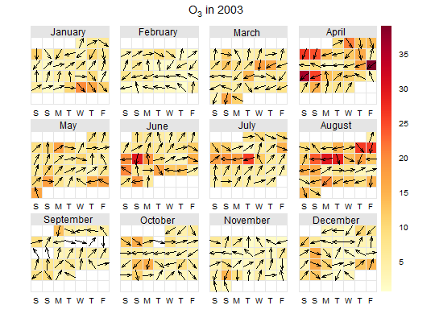

Plot time series values in convential calendar format
This function will plot one year of data by month laid out in a conventional calendar format. The main purpose is to help rapidly visualise potentially complex data in a familiar way. Users can also choose to show daily mean wind vectors if wind speed and direction are available.
calendarPlot(mydata, pollutant = "nox", year = 2003, month = 1:12, type = "default", annotate = "date", statistic = "mean", cols = "heat", limits = c(0, 100), lim = NULL, col.lim = c("grey30", "black"), font.lim = c(1, 2), cex.lim = c(0.6, 1), digits = 0, data.thresh = 0, labels = NA, breaks = NA, w.shift = 0, main = paste(pollutant, "in", year), key.header = "", key.footer = "", key.position = "right", key = TRUE, auto.text = TRUE, ...)
Arguments
- mydata
- A data frame minimally containing
dateand at least one other numeric variable. The date should be in eitherDateformat or classPOSIXct. - pollutant
- Mandatory. A pollutant name corresponding to a
variable in a data frame should be supplied e.g.
pollutant = "nox". - year
- Year to plot e.g.
year = 2003. - month
- If only certain month are required. By default the
function will plot an entire year even if months are missing. To
only plot certain months use the
monthoption where month is a numeric 1:12 e.g.month = c(1, 12)to only plot January and December. - type
- Not yet implemented.
- annotate
- This option controls what appears on each day of the calendar. Can be: “date” --- shows day of the month; “wd” --- shows vector-averaged wind direction, or “ws” --- shows vector-averaged wind direction scaled by wind speed. Finally it can be “value” which shows the daily mean value.
- statistic
- Statistic passed to
timeAverage. - cols
- Colours to be used for plotting. Options include
“default”, “increment”, “heat”,
“jet” and
RColorBrewercolours --- see theopenairopenColoursfunction for more details. For user defined the user can supply a list of colour names recognised by R (typecolours()to see the full list). An example would becols = c("yellow", "green", "blue") - limits
- Use this option to manually set the colour scale
limits. This is useful in the case when there is a need for two
or more plots and a consistent scale is needed on each. Set the
limits to cover the maximimum range of the data for all plots of
interest. For example, if one plot had data covering 0--60 and
another 0--100, then set
limits = c(0, 100). Note that data will be ignored if outside the limits range. - lim
- A threshold value to help differentiate values above
and below
lim. It is used whenannotate = "value". See next few options for control over the labels used. - col.lim
- For the annotation of concentration labels on each
day. The first sets the colour of the text below
limand the second sets the colour of the text abovelim. - font.lim
- For the annotation of concentration labels on each
day. The first sets the font of the text below
limand the second sets the font of the text abovelim. Note that font = 1 is normal text and font = 2 is bold text. - cex.lim
- For the annotation of concentration labels on each
day. The first sets the size of the text below
limand the second sets the size of the text abovelim. - digits
- The number of digits used to display concentration
values when
annotate = "value". - data.thresh
- Data capture threshold passed to
timeAverage. For example,data.thresh = 75means that at least 75% of the data must be available in a day for the value to be calculate, else the data is removed. - labels
- If a categorical scale is required then these labels
will be used. Note there is one less label than break. For
example,
labels = c("good", "bad", "very bad").breaksmust also be supplied if labels are given. - breaks
- If a categorical scale is required then these breaks
will be used. For example,
breaks = c(0, 50, 100, 1000). In this case “good” corresponds to values berween 0 and 50 and so on. Users should set the maximum value ofbreaksto exceed the maximum data value to ensure it is within the maximum final range e.g. 100--1000 in this case. - w.shift
- Controls the order of the days of the week. By
default the plot shows Saturday first (
w.shift = 0). To change this so that it starts on a Monday for example, setw.shift = 2, and so on. - main
- The plot title; default is pollutant and year.
- key.header
- Adds additional text/labels to the scale key.
For example, passing
calendarPlot(mydata, key.header = "header", key.footer = "footer")adds addition text above and below the scale key. These arguments are passed todrawOpenKeyviaquickText, applying theauto.textargument, to handle formatting. - key.footer
- see
key.header. - key.position
- Location where the scale key is to plotted.
Allowed arguments currently include
"top","right","bottom"and"left". - key
- Fine control of the scale key via
drawOpenKey. SeedrawOpenKeyfor further details. - auto.text
- Either
TRUE(default) orFALSE. IfTRUEtitles and axis labels will automatically try and format pollutant names and units properly e.g. by subscripting the `2' in NO2. - ...
- Other graphical parameters are passed onto the
latticefunctionlattice:levelplot, with common axis and title labelling options (such asxlab,ylab,main) being passed to viaquickTextto handle routine formatting.
Value
As well as generating the plot itself, calendarPlot
also returns an object of class ``openair''. The object includes
three main components: call, the command used to generate
the plot; data, the data frame of summarised information
used to make the plot; and plot, the plot itself. If
retained, e.g. using output <- calendarPlot(mydata,
"nox"), this output can be used to recover the data, reproduce
or rework the original plot or undertake further analysis.
An openair output can be manipulated using a number of generic
operations, including print, plot and
summary.
Details
calendarPlot will plot one year of data in a conventional
calendar format i.e. by month and day of the week. The main
purpose of this function is to make it easy to visualise data in a
familiar way. Daily statistics are calculated using
timeAverage, which by default will calculate the
daily mean concentration.
If wind direction is available it is then possible to plot the
wind direction vector on each day. This is very useful for getting
a feel for the meteorological conditions that affect pollutant
concentrations. Note that if hourly or higher time resolution are
supplied, then calendarPlot will calculate daily averages
using timeAverage, which ensures that wind
directions are vector-averaged.
If wind speed is also available, then setting the option
annotate = "ws" will plot the wind vectors whose length is
scaled to the wind speed. Thus information on the daily mean wind
speed and direction are available.
It is also possible to plot categorical scales. This is useful
where, for example, an air quality index defines concentrations as
bands e.g. “good”, “poor”. In these cases users must
supply labels and corresponding breaks.
Note that is is possible to pre-calculate concentrations in some
way before passing the data to calendarPlot. For example
rollingMean could be used to calculate rolling
8-hour mean concentrations. The data can then be passed to
calendarPlot and statistic = "max" chosen, which
will plot maximum daily 8-hour mean concentrations.
See also
Examples
# load example data from package data(mydata) # basic plot calendarPlot(mydata, pollutant = "o3", year = 2003)# show wind vectors calendarPlot(mydata, pollutant = "o3", year = 2003, annotate = "wd")## Not run: ------------------------------------ # # show wind vectors scaled by wind speed and different colours # calendarPlot(mydata, pollutant = "o3", year = 2003, annotate = "ws", # cols = "heat") # # # show only specific months with selectByDate # calendarPlot(selectByDate(mydata, month = c(3,6,10), year = 2003), # pollutant = "o3", year = 2003, annotate = "ws", cols = "heat") # # # categorical scale example # calendarPlot(mydata, pollutant = "no2", breaks = c(0, 50, 100, 150, 1000), # labels = c("Very low", "Low", "High", "Very High"), # cols = c("lightblue", "green", "yellow", "red"), statistic = "max") # ## ---------------------------------------------